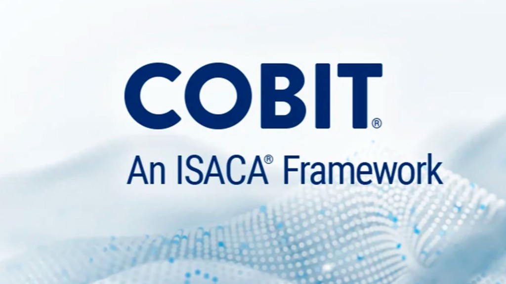

Voltar à página inicial
O que é o COBIT?
O COBIT (Control Objectives for Information and Related Technologies) é um framework desenvolvido pela ISACA para governança e gestão de tecnologia da informação. Ele fornece um conjunto abrangente de práticas para ajudar organizações a criar valor por meio da TI, mantendo o equilíbrio entre benefícios, otimização de riscos e uso de recursos.

COBIT 2019
A versão atualizada, COBIT 2019, traz melhorias significativas em relação às versões anteriores, incluindo:
- Maior flexibilidade para adaptação a diferentes contextos organizacionais
- Novos conceitos de design factors (fatores de design)
- Atualização dos processos (de 37 para 40)
- Maior ênfase em governança além da gestão
- Integração com outros frameworks e padrões
Componentes Principais
1. Framework
Fornece a estrutura geral que organiza os componentes de governança de TI.
2. Processos
40 processos agrupados em 5 domínios:
- Avaliar, Dirigir e Monitorar (EDM) - 5 processos
- Alinhar, Planejar e Organizar (APO) - 14 processos
- Construir, Adquirir e Implementar (BAI) - 10 processos
- Entregar, Servir e Suportar (DSS) - 6 processos
- Monitorar, Avaliar e Avaliar (MEA) - 5 processos
3. Objetivos de Controle
Objetivos específicos para cada processo que ajudam a garantir controles adequados.
4. Metas de Governança
Vinculadas aos benefícios empresariais que a organização busca alcançar.
Benefícios da Implementação
- Alinhamento estratégico: Garante que a TI apoie os objetivos de negócio
- Entrega de valor: Maximiza o retorno sobre investimentos em TI
- Gestão de riscos: Identifica e mitiga riscos de TI de forma eficaz
- Medição de desempenho: Permite avaliar o desempenho da TI de forma objetiva
- Conformidade: Ajuda a cumprir requisitos regulatórios e legais
Como Implementar o COBIT
A implementação do COBIT geralmente segue estas etapas:
- Identificar os drivers de governança (necessidades do negócio)
- Determinar o escopo inicial
- Definir a aspiração de governança
- Realizar avaliação de capacidade atual
- Definir plano de implementação
- Implementar melhorias
- Monitorar e revisar continuamente
É importante lembrar que o COBIT não é um modelo "tamanho único". Cada organização deve adaptá-lo às suas necessidades específicas.
Voltar à página inicial